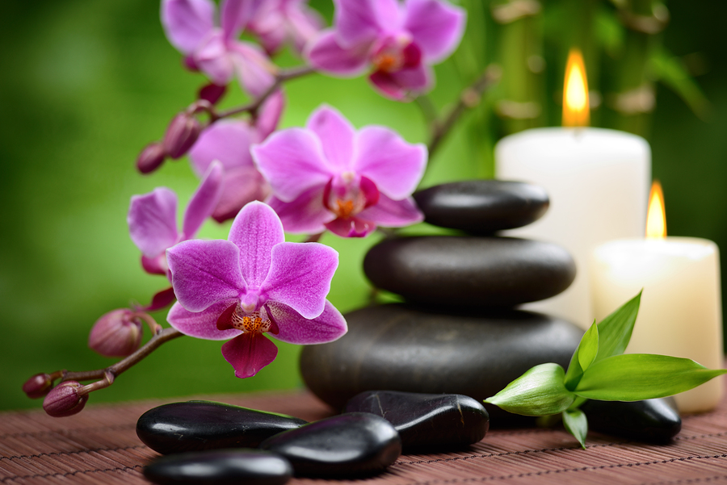

YOU MADE IT TO MY NEW PAGE
Feng shui — which literally translates to "wind and water" — is the ancient Chinese art of placement. The goal is to enhance the flow of chi (life force or spiritual energy), and to create harmonious environments that support health, beckon wealth and invite happiness.
7 Feng Shui Steps To A Harmonious Home
Getting started with feng shui for your house & home can be easy when you start with the house basics and gradually move on to the more complex feng shui levels. To help you get started with good feng shui in your home, here are some helpful feng shui house steps for beginners.
1. Clear Out Your Clutter, get rid of everything you do not love in your house. Clutter clearing is a time-and energy-consuming process that will feel like therapy, but it will help you "lighten up the load," so to speak. Do not skip this step, as it is an essential one in creating harmonious house feng shui energy.
2. Have Good Quality Air and Good Quality Light in your house. These two elements are essential for good feng shui energy (called Chi) in your home. Open the windows often, introduce feng shui air-purifying plants or use an air-purifier. Allow as much natural light as possible into your home, and consider using full-spectrum lights.
3. Define the Bagua, or the feng shui energy map of your house, by using one of the two main feng shui methods - the classical school bagua or the BTB grid. Once you define the bagua, you will know which areas of your home are connected to specific areas of your life. For example, in traditional feng shui, the Southeast feng shui area of your home is connected to the flow of money energy in your life.
4. Get the Basics of 5 Feng Shui Elements in order to create balance and vibrant energy in all areas of your home. For example, if you are working on attracting more prosperity, you will introduce the feng shui elements of Wood and Water in the Southeast area of your house. If your need to improve your health, you will place lush wood feng shui element items, such as plants or pieces of wood furniture in the East area.
The theory of five feng shui elements is one of the main concepts in the ancient art of feng shui. The five feng shui elements are Wood, Fire, Earth, Metal, Water. These feng shui elements interact in many ways, such as productive and destructive cycles.
5. Find Out Your Feng Shui Birth Element and create a home to nourish and support your energy. For example, if your own element is Fire, you need to introduce the expressions of Fire feng shui element, such as the Fire element colors (red, orange, purple, magenta, pink, yellow), triangular shapes, etc. You will also need a strong Wood element in your home, as Wood feeds the Fire element.
6. Find Out Your Kua Number and Your Lucky Directions so that you can be energized by good energy from your best, or lucky feng shui directions. Adjust the position of your bed, your desk, the seating in your dining area, etc. For example, if your Kua number is 1, it is best to face one of the following directions: Southeast, East, South, and North.
7. Always Be Mindful of the Energy in Your Home and how its energy influences your well-being. Make a habit of paying close attention to the so-called feng shui "trinity" that is deeply connected to your health - your bedroom, your bathroom and your kitchen. Nothing is static in the world of energy, so be wise and keep your home healthy and happy.
After you have mastered these 7 home feng shui steps, you can explore the deeper levels of feng shui, such as the annual movement of feng shui stars, or energies. Be sure to start with the basic steps, though, to have fun and to thoroughly enjoy the process. This is good feng shui!